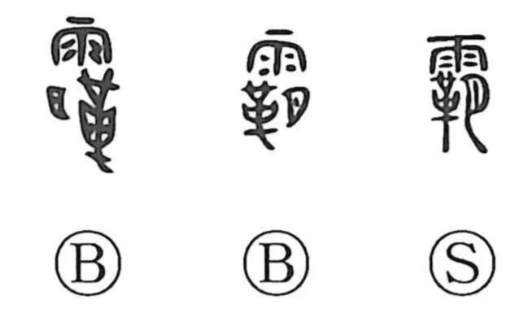

Explanation
In its archaic form 霸, the character brings together the signs for rain (雨), a flayed and stretched animal hide (革), and the moon (月). 革 shows the whole hide of a beast, and the old graph depicted a carcass left to wind and rain until its color bleached to white; its pallor was likened to the wan moon, hence the addition of 月 and the sense of “white, bleached.” From this, by phonetic loan, it came to stand where 伯 (“chief, head”) was intended, yielding meanings such as “leader,” “supreme ruler” (as in 覇者). The link is reinforced by 伯/白, which themselves depict a bleached skull, likewise “white.” Bronze inscriptions of the Zhou period even quartered the month by the moon’s changing brightness as 初吉, 既生霸, 既望, and 既死覇—naming the waxing and waning of that pallor. The modern joyo form 覇 is the popular (simplified) variant of 霸.